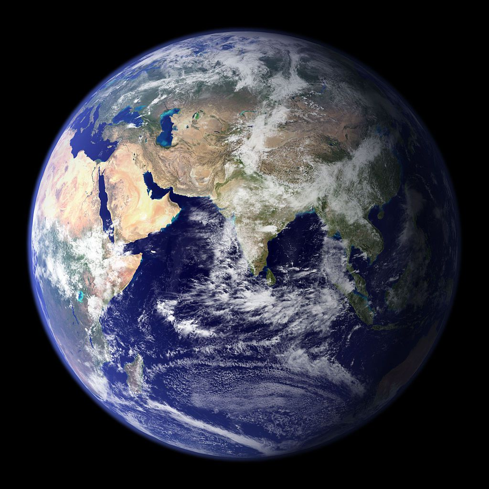

INNER PLANETS
The planets Mercury, Venus, Earth, and Mars, are called terrestrial because they have a compact, rocky surface like Earth's terra firma. The terrestrial planets are the four innermost planets in the solar system.

Mercury
- -Closest to the sun
- -Small and dry
- -Many craters

Venus
- -Second planet to the sun
- -Hottest and brightess planet
- -Doesn't have any moons

Earth
- -The third planet
- -Only planet that has life
- -71% of earth is water

Mars
- -The fourth planet
- -Red dust on surface
- -Has the largest volcano